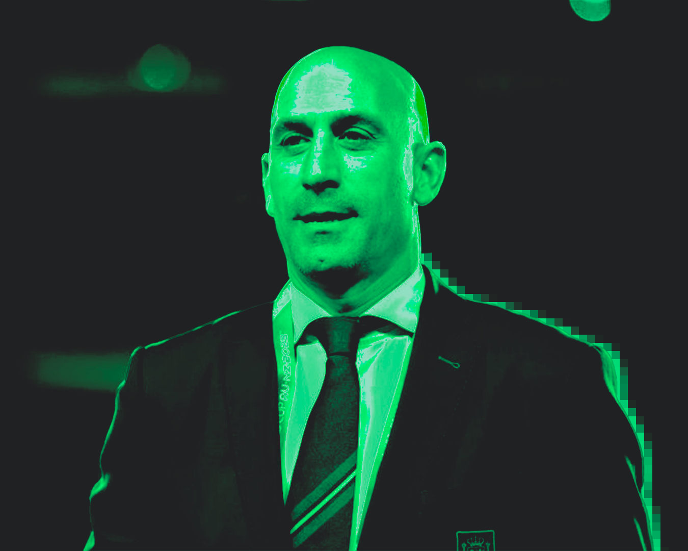

Ara que s’apropa la Supercopa d’Espanya, és un molt bon moment per recordar el tripijoc de Gerard Piqué per portar el torneig a l'Aràbia Saudí. Ens remuntem a l’any 2019, concretament el 15 de setembre, quan es fa oficial un acord entre la Federació Espanyola i el país asiàtic per portar la Supercopa a terreny saudí a canvi d’una morterada de bitllets. Un contracte que està firmat fins al 2029 i que suposa uns ingressos d’uns 40 milions anuals per la Federació, unes xifres estratosfèriques comparades amb les que es gestionaven quan es jugava en territori nacional, que no superaven el mig milió. En aquest acord, participa l’empresa Kosmos, propietat de Piqué, en aquell moment encara jugador de la primera plantilla del F.C. Barcelona, que rep 4 milions d’euros per cada edició celebrada. La polèmica estava servida, ja que la Supercopa d’Espanya tenia vincles empresarials amb el central d’un dels equips participants.
Les crítiques i opinions van arribar quan l’any 2022, El Confidencial va treure a la llum uns àudios de les negociacions entre el central del Barça i Rubiales, el president de la Federació Espanyola de Futbol. Un cop es van fer públiques les conversacions i els detalls de l’acord, van sorgir nombroses opinions i especulacions sobre les possibles implicacions en la competició, ja que el president de la Federació estava negociant directament amb un jugador d’un equip present a la competició. A part dels ingressos econòmics ja esmentats, la comissió augmentava en cas que Barça i Madrid participessin en el torneig, amb la polèmica que això pot comportar envers la legitimitat de les competicions que regulen l'accés a la Supercopa (recordem que participen els dos primers classificats de la lliga nacional i els dos finalistes de la Copa del Rei). Un contracte multimilionari, amb comissions a dojo, que ara més endavant ha tornat a portar polèmica.
Fa unes setmanes, el tema va tornar a sortir en els mitjans nacionals. Aprofitant la investigació jurídica en curs per possibles contractes irregulars de Rubiales durant el seu mandat, la Unitat Central Operativa (UCO) de la Guàrdia Civil, ha conclòs en un informe del passat 29 de novembre que Gerard Piqué va ser part activa a l’hora de tancar el contracte de la Supercopa. La unitat ha demanat presentar una sol·licitud d’ajuda a les autoritats saudís per investigar possibles comptes bancaris en el país, per esbrinar i aclarir, no només el contracte de la Supercopa, sinó també de més negocis derivats d’aquesta. A més, a l’informe s’esmenten conversacions de Kosmos amb Amazon i Sony mentre es consideraven possibilitats per la celebració del torneig. Un negoci que ha suposat infinitament beneficiós per Rubiales i Piqué, però que ha estat envoltat de polèmica, i ara, de possibles conseqüències judicials.